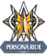

When units in the front row for the same column this unit is in attacks rest it to add their power to them
Intercept(Grades 2)
Units on the rearguard circle with this icon can be placed in Guardian Circle when being attacked.Applies to front row units
Twin Drive(Grade 3)
If units with this icon are on the vanguard circle and attack, you drive check 2 times
Persona ride(Grade 3)
Only happen if you place the same grade 3 ontop of another copy of it on vanguard circle.The effect it gives is to,draw 1 card and front row gains +10,000 upon doing so unit end of turn
Card Ability Icons
Use these by paying the cost before attacking
Once conditions are meet, they are used automatically
Always active once card is on the field
Type of cost in game requiring you to turn face up cards in the damage zone face down
This is where you turn face down cards in the damage zone face up
Type of cost where you move the stated amount of cards under the Vanguard(soul) to the drop zone
This is where you place the stated amound of cards under the Vanguard(soul) from the deck